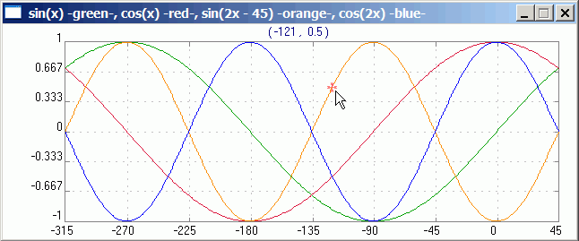
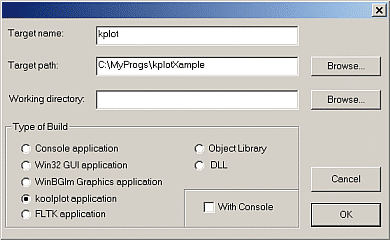
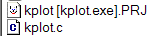
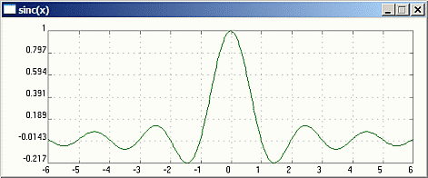
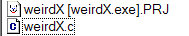
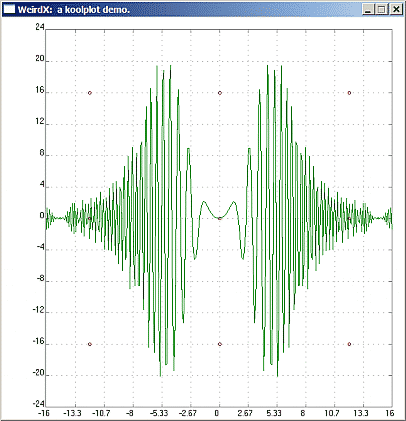
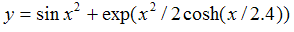

koolplot is freeware open-source. It is a very simple-to-use software library for drawing graphs from C or C++ programs. This document introduces C code examples, but the techniques illustrated could just as well be used in C++ programs.

Sample koolplot output
Using koolplot in C or C++ Programs
koolplot Syntax:
Code in the examples below is heavily commented. The "sticky bits" are explained.
When unsure, the  koolplot documentation in the Quincy Help->Programmer's Help menu provides detailed explanations of the koolplot C API (Application Programmer's Interface), including function calls,
koolplot documentation in the Quincy Help->Programmer's Help menu provides detailed explanations of the koolplot C API (Application Programmer's Interface), including function calls, plotdata data type, and useful programming techniques. It's a good idea to keep the koolplot documentation open in a browser window while you build and study the example programs.
In order to use elements of the koolplot software library in your programs, you must always insert the line:
#include <koolplot.h> at the start of your programs.
koolplot Project:
To use the koolplot software library from within Quincy all you need to do is to create a new "koolplot application " in the File->New->Project menu. The procedure is the same for C or C++ projects. Select a target path for your project (the place where you will develop and build your program). The "working directory" field can usually be left blank. Un-tick "With Console" if you do not need an extra black "DOS" screen. Click OK.

- Insert your source code files into the project (assuming that they already exist in the project directory) by right-clicking in the project window that opens.
If a source code file that you intend to have in a project is not yet written, create it, then insert it into the project before you build the project.
The example programs below all come with a ready-made project file. All you need to do is load the existing project file into Quincy, then build, execute, and examine the programs.
_____________
kplot.c
This first example program demonstrates the most common koolplot programming techniques:
* using the plotdata data type and mathematical expressions
* displaying single graphs,
* displaying multiple graphs,
* using your own functions in mathematical expressions,
* entering data one point at a time,
* displaying graphs in various colour,
Get the example from the zip file:  kplot.zip
Extract the zip to the directory of your choice, open the project file, then build, run, and examine the code in kplot.c.

The program opens several graphs in succession, each of them illustrating a different technique.
_____________
weirdX.c
This example demonstrates more advanced koolplot programming techniques:
* controlling the extent of the axes
(Extending the axes range beyond the minimum and maximum of the x and y axes.)
* adding and displaying single data points.
(Single points would not be visible. Single data points, displayed as a tiny circle can be displayed by using a special koolplot function demonstrated here.)
Get the example from the zip file:  weirdX.zip
Extract the zip to the directory of your choice, open the project file, then build, run, and examine the code in weirdX.c.

The program displays an interesting-looking function , extends the y axis beyond the minima and maxima of the function, and displays a number of individual data points.